Pourquoi Visiter New-York?
1/ Pour voir la ville dont tout le monde parle
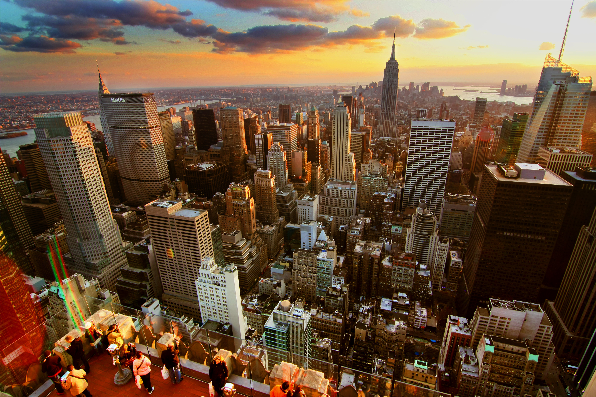A la télévision, au cinéma, dans les journaux… New York s’affiche partout ! Faites ce petit test : pendant une journée, comptez le nombre de fois où vous entendez parler de New York à la radio ou à la télévision ou comptez le nombre de fois que vous voyez quelqu’un se promener avec un t-shirt I Love New York ou une casquette NY… Vous verrez que le score sera toujours haut !
2/ Pour monter au sommet des buildings les plus haut d’Amérique

Si vous êtes déjà monté(e) au sommet des 300 mètres de la tour Eiffel, sachez qu’à New York la plupart des tours de Midtown dépassent les 300 mètres. Et New York monte bien plus haut ! Le building le plus haut de New York, la tour One World Trade Center, culmine à 541 mètres au sommet de son antenne. Vous pourrez monter tout au sommet du bâtiment et bénéficier d’une vue d’avion sur New York !
3/ Pour en prendre plein la vue à chaque coin de rue
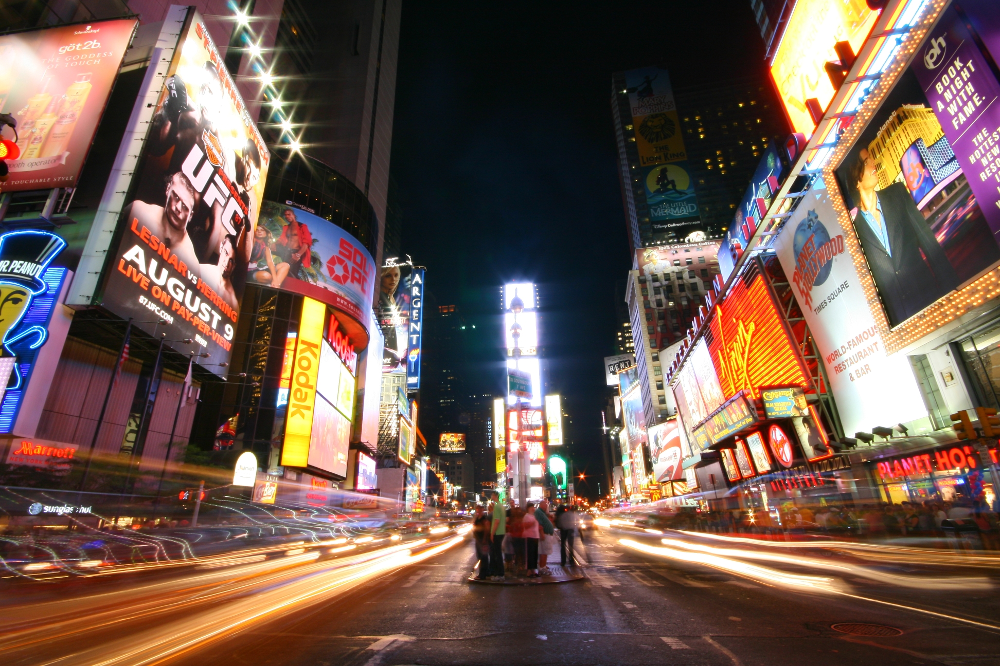Que vous habitiez à Paris, Lyon, Marseille, Bruxelles ou Genève, attendez-vous à prendre une grosse claque en débarquant à New York… Les plus grandes villes européennes ressemblent à de gentils petits villages face au dynamisme de New York !! A New York, tout est plus grand, tout va plus vite et tout bouge 24h/24. Rendez-vous en semaine dans les rues du Financial District pour sentir vibrer le monde de la finance. Parcourez SoHo, Greenwich Village et l’East Village pour voir l’âme créatrice de New York. Le soir, suivez l’animation de Times Square, la seule place au monde qui brille plus le jour que la nuit ! Aucune autre ville au monde ne vibre à ce point et vous devez absolument le voir une fois dans votre vie.
4/ Pour voir des œuvres d’art majeures de l’Histoire de l’art
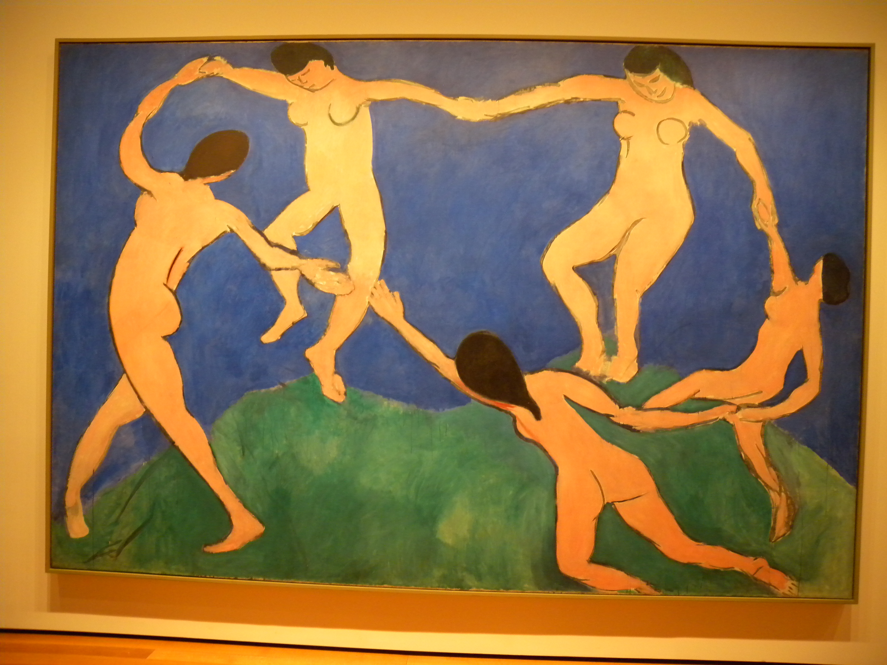Comme Paris et Londres, New York compte quelques uns des principaux musées au monde. Le Metropolitan Museum of Art rivalise ainsi sans complexe avec le Louvre et le British Museum. Parmi les très nombreuses œuvres que vous pourrez voir au « Met », vous trouverez d’ailleurs de nombreuses peintures signées par des grands noms français, de Renoir à Cézanne en passant par Claude Monet. Autre musée majeur : le Museum of Modern Art, ou MoMA. Là, vous avez rendez-vous avec l’art contemporain et les papes du pop-art, dont l’incontournable Andy Wahrol. Ne manquez pas non plus la « Danse », un tableau de 1909 signé Henri Matisse. Le Guggenheim Museum vous permettra lui aussi de découvrir des pièces majeures de l’histoire de l’art dont des sculptures d’Alberto Giacometti et de Constantin Brancusi.
5/ Pour voir le décor de vos séries et films préférés
New York ne compte plus le nombre de films et de séries tournés ici. Quelques noms au hasard : Il était une fois en Amérique, Le loup de Wall Street, Taxi Driver, Gangs of New York, Manhattan, Une nuit au musée, les Schtroumpfs, Madagascar, SOS Fantômes, Le gendarme à New York, Le jour d’après, Independance Day, Superman, Friends, Sex and the City… Il y en a pour tous les goûts et vous avez forcément vu l’un des ces films. Il est donc temps d’entrer dans l’écran et de parcourir les lieux de tournage !
6/ Pour refaire votre garde-robe
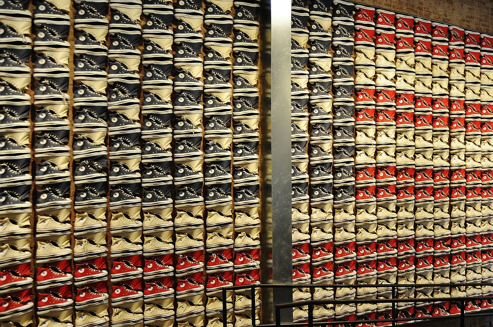Baskets, jeans, street wear… C’est à New York que naissent bon nombre de modes ! Dans les boutiques de chaussures de New York, vous trouverez d’ailleurs des modèles que vous ne trouverez pas encore en Europe. L’occasion de rapporter la dernière paire de Nike ou d’Asics ! Si vous êtes fan de basket-ball, le détour est obligatoire par le NBA Store de la Fifth Avenue, le plus grand magasin au monde dédié à la ligue de basket nord-américaine.
7/ Pour assister à un match de sport américain
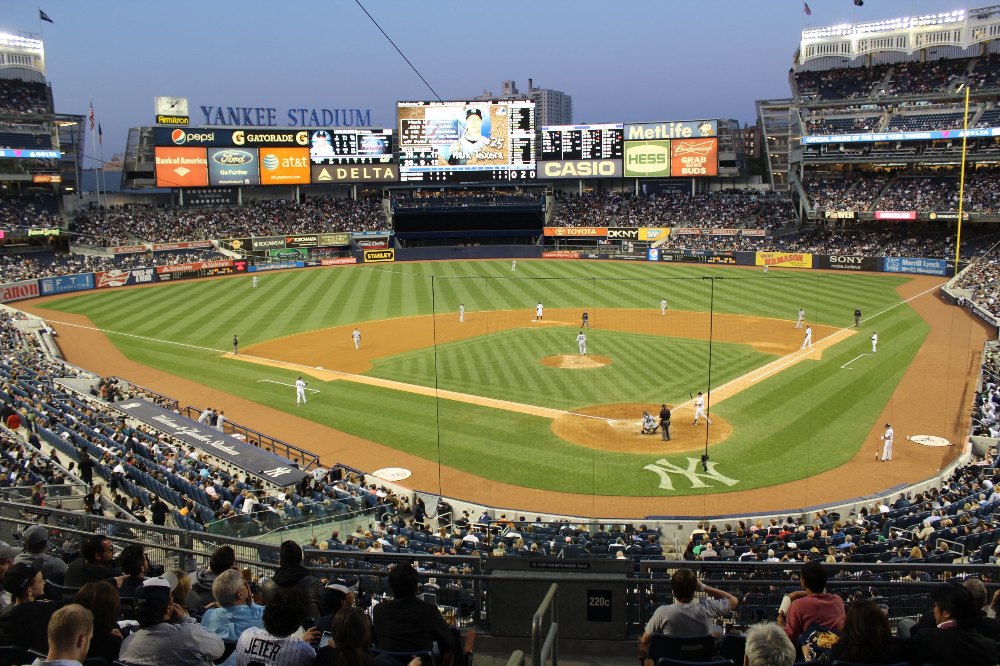En Europe, on parle souvent du baseball, du football américain ou de la NBA… Une fois dans votre vie, allez voir pour de bon une rencontre sportive américaine ! En matière de NBA, la salle du Madison Square Garden est LA salle la plus mythique. Plus d’informations sur la page du basket-ball à New York. Pour une poignée de dollars, n’hésitez pas à assister à un match de baseball. L’occasion de découvrir les règles de ce sport typiquement américain et de voir l’ambiance particulière d’un match de baseball. Plus d’informations sur la page dédiée au baseball à New York. Enfin, si vous rêvez de voir un match de football américain, c’est un peu plus cher mais c’est possible.
8/ Pour courir le marathon de New York
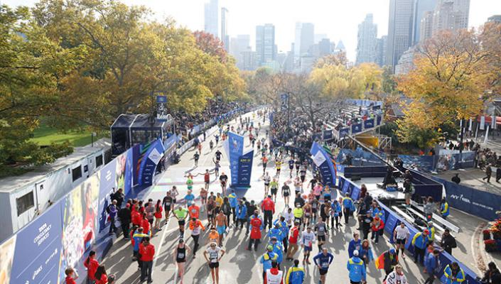Si vous aimez courir, vous rêvez forcément de participer un jour au marathon de New York, de loin le marathon le plus mythique au monde ! Son parcours offre un circuit inoubliable à travers les 5 grands quartiers de New York, avec un départ sur le pont Verrazano-Narrows, à l’entrée de la baie de New York, et une arrivée dans Central Park. Le marathon de New York se déroule tous les ans, le premier dimanche de novembre, mais vous devez vous inscrire bien avant.
9/ Pour découvrir le vrai goût de l’Amérique

Si vous ne connaissez les burgers qu’à travers les ignobles sandwichs de Mac Donald’s, il est temps de vraiment découvrir à quoi ressemble un burger croustillant et juteux ! A New York, vous aurez l’occasion de goûter toute l’étendue de la cuisine américaine, des burgers au cheesecake en passant par les black and white cookies, les pancakes, la smoked meat ou les vrais hot-dogs.
10/ Pour vivre le rêve américain !
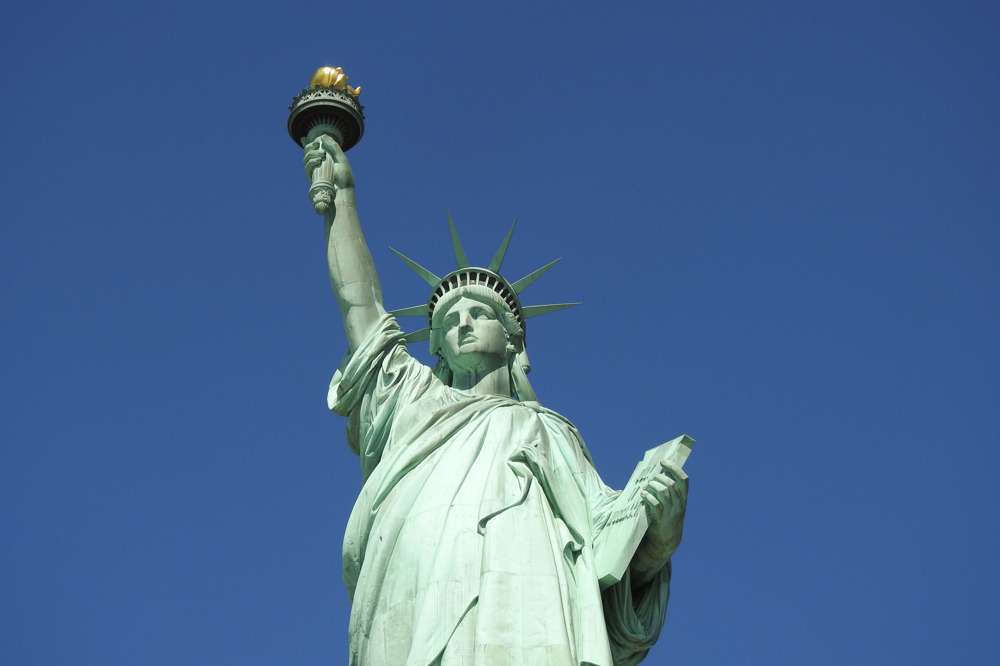Plus que toute autre ville aux Etats-Unis, New York incarne le rêve américain. C’est ici que nombre d’immigrants ont débarqué à la fin du 19ème siècle et au début du 20ème siècle. Et, chaque année, ils sont nombreux à tenter leur chance ! Ce voyage à New York vous donnera peut-être envie vous aussi de changer de vie. Rien n’est impossible à New York ! Et même si vous ne franchissez finalement pas le pas, New York vous communiquera son énergie ! Vous verrez d’ailleurs que, une fois que vous aurez goûté à New York, vous y reviendrez année après année !
Que faire à New York ?
1. La High Line
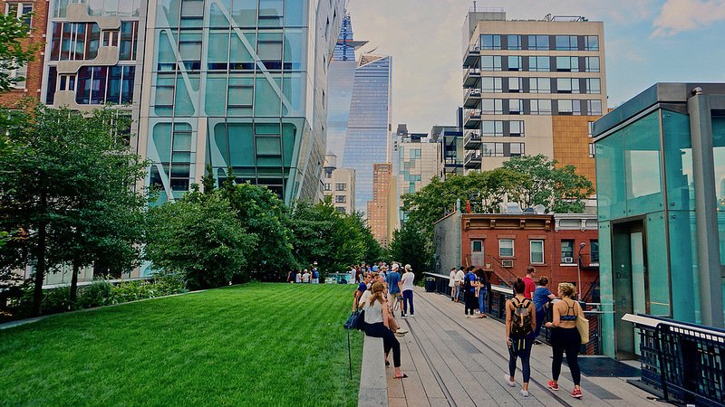Les new-yorkais adorent se promener et la High Line, un parc linéaire urbain suspendu long de 2.3 km qui s’étend du quartier de Meatpacking à travers Chelsea sur une voie ferrée abandonnée, est une promenade fantastique. Ressuscité avec un labyrinthe étonnant de jardins (présentant 300 espèces de plantes), de chemins et de plans d’eau, il offre un œil différent sur l’architecture contemporaine, la rivière Hudson : ou comment visiter New-York dans la peau d’un local.
2. La Statue de la Liberté
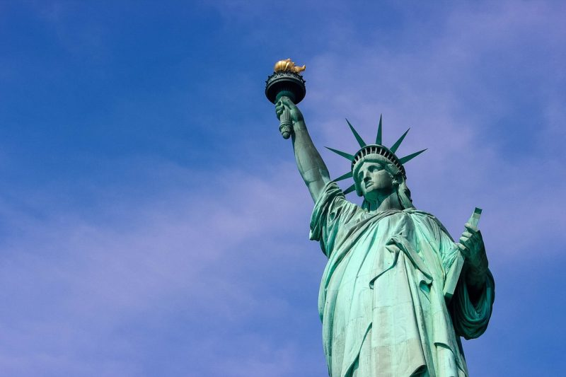Que vous la découvriez depuis Battery Park ou bien à bord du ferry de Staten Island, vous devez vraiment contempler la Statue de la Liberté si vous venez visiter New-York. Approchez-vous jusqu’à ses pieds pour avoir une très belle vue sur la rivière et Manhattan. La statue de cuivre la plus emblématique du monde a été conçue par Frédéric-Auguste Bartholdi comme un cadeau de la France en 1886 à l’occasion du centenaire des Etats-Unis. « Lady Liberty » mesure 46 m de haut, avec un index mesurant 2.40 m de long et des yeux de près de 90 centimètres de large. L’une des meilleures choses à faire lors d’une visite de New York est de passer devant la statue en ferry et de visiter le musée de l’immigration sur Ellis Island. Ellis Island est lieu historique de l’immigration américaine qui est transformé en musée depuis 1990.
3. Central Park
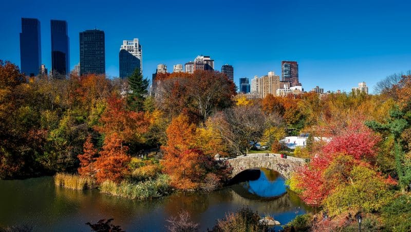Que vous alliez à Central Park pour monter sur le Carrousel vintage de 1908, siroter un verre de vin tout en admirant la vue sur le lac depuis le Boathouse Café, rigoler devant les otaries et les pingouins du zoo, observer les oiseaux au Ramble, ou courir autour du Reservoir avec les locaux, cet oasis de 341 hectares est le plus grand jardin urbain du monde et une expérience incontournable à explorer si vous venez visiter New-York pour en découvrir notamment ses poumons de verdure.
4. Metropolitan Museum of Art
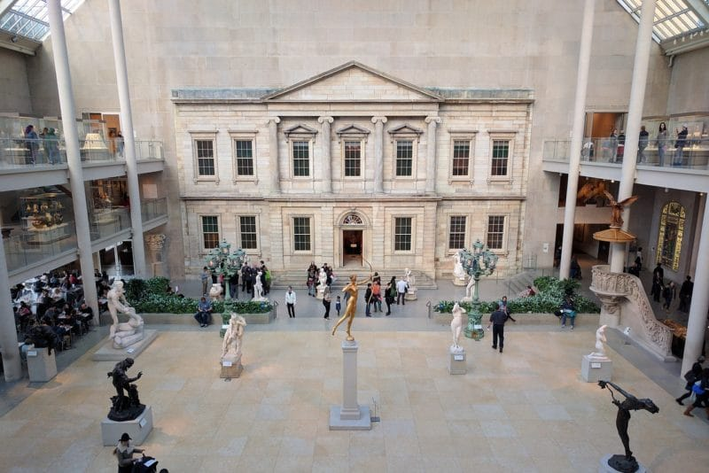Génial et intimidant, le Metropolitan Museum of Art se classe parmi les meilleurs musées d’art du monde, abritant des chefs-d’œuvre médiévaux et expressionnistes mais aussi l’ensemble d’un temple égyptien. Les sculptures grecques et romaines, les expositions d’Afrique et d’Océanie, et l’aile asiatique sont également assez incroyables. Si vous vous réveillez un matin et qu’il pleut, rendez-vous au « Met » (ouvert sept jours par semaine) et égarez vous dans les allées du musée.
5. Musée Solomon R. Guggenheim
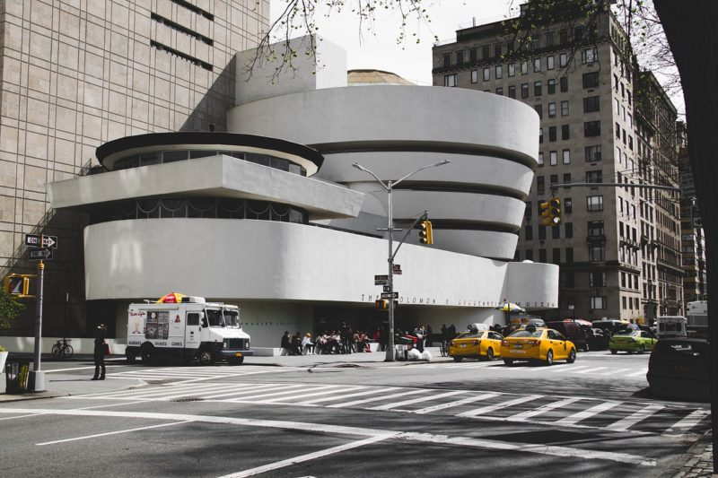Une visite du musée Guggenheim est doublement enrichissante si vous cherchez que faire à New-York dans le cadre d’une visite originale : vous y découvrirez une sélection pointue de collections d’objets d’art moderne et contemporain et entrerez dans l’un des bâtiments les plus emblématiques du milieu du 20ème siècle aux Etats-Unis. Conçu par Frank Lloyd Wright et inauguré en 1959, le musée imite une coquille de nautilus (un mollusque) en spirale, qui conduit les visiteurs sur des rampes en pente douce où des expositions mettent en vedette des œuvres de Picasso, Monet, Gauguin, Cézanne, Kandinsky, et d’autres autour d’une rotonde dramatique.
6. Grand Central Terminal
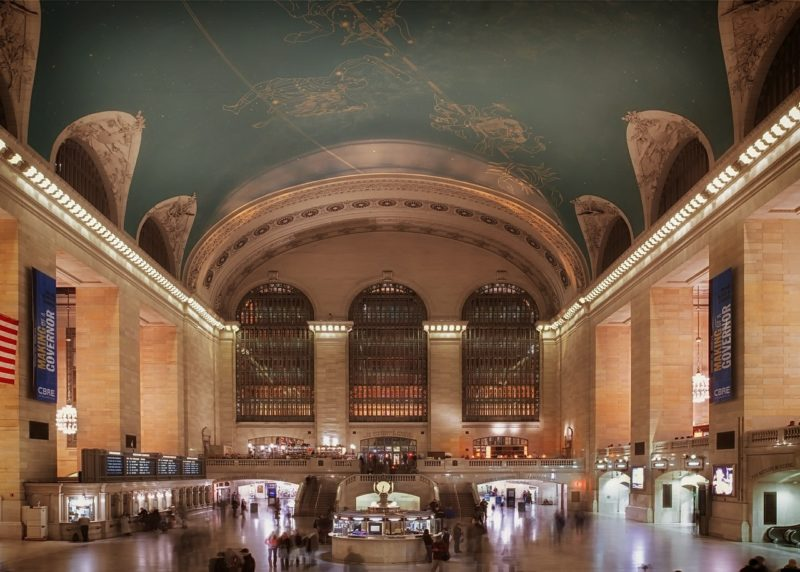Emblématique de la Grande Pomme, elle est une « référence » (souvent filmique) qui permet de visiter New-York sous ses lieux les plus symboliques. 750 000 personnes se précipitent à travers Grand Central Terminal tous les jours, alors pendant que vous y êtes, essayez de ne pas vous laisser prendre dans l’agitation. Visitez cette gare vers midi, lorsque la lumière perce les vitraux comme dans une cathédrale, afin d’apprécier au mieux l’immense hall principal de ce bijou d’architecture vieux de 100 ans. Terminez votre visite en déjeunant dans la salle au niveau inférieur, où vous pouvez manger de tout, des huîtres aux hot-dogs.
7. Times Square
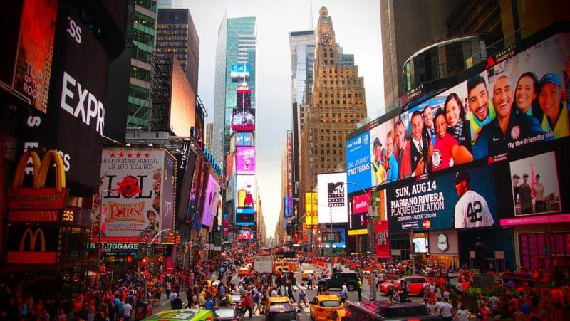Beaucoup de new-yorkais essayent d’éviter Times Square, non pas à cause de son passé sordide (peep shows, prostitution, cinémas porno), mais plutôt parce qu’il ressemble maintenant à un parc d’attractions urbain envahi par des hordes de touristes qui prennent des selfies. Pour autant, cela ne veut pas que dire que vous ne devez pas voir Times Square, allez-y au moins une fois ! Pendant que vous êtes au milieu des écrans géants et des néons clignotants, montez les escaliers rouge rubis, trouvez le cowboy guitariste nu, ou prenez de la hauteur dans un des bars à cocktail nichés en haut des buildings avant de poursuivre votre chemin en direction du Broadway.
8. Le Pont de Brooklyn
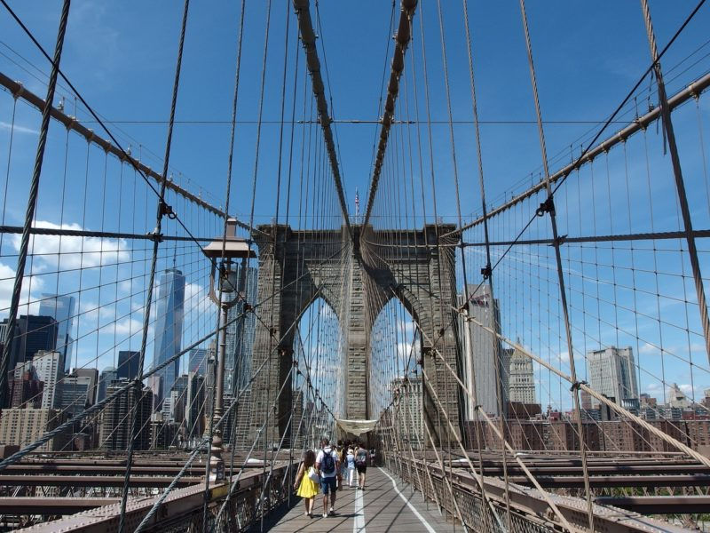Captez l’énergie historique de la ville et admirez sa fameuse skyline en vous promenant sur la voie piétonne du pont de Brooklyn qui est là depuis son ouverture en 1883. La vue est meilleure si vous partez de Brooklyn (plusieurs lignes de métro vous déposent à moins de 15 minutes à pied). Allez par exemple visiter Coney Island (en été) ou le New York Transit Museum et terminez par une promenade vers Manhattan en fin d’après-midi tandis que les gratte-ciel se profilent derrière les grandes arches gothiques du fameux pont. Dans Brooklyn, allez faire un tour à Williamsburg, le quartier hispter de New York.
Multimedias
Photos